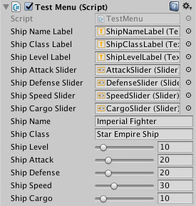
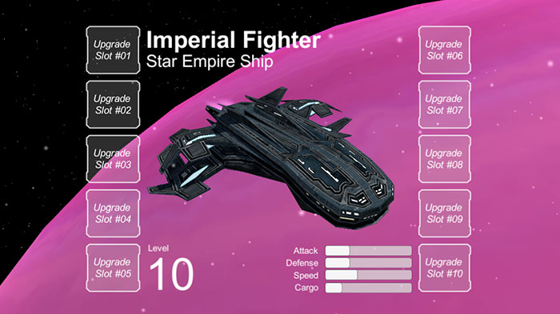
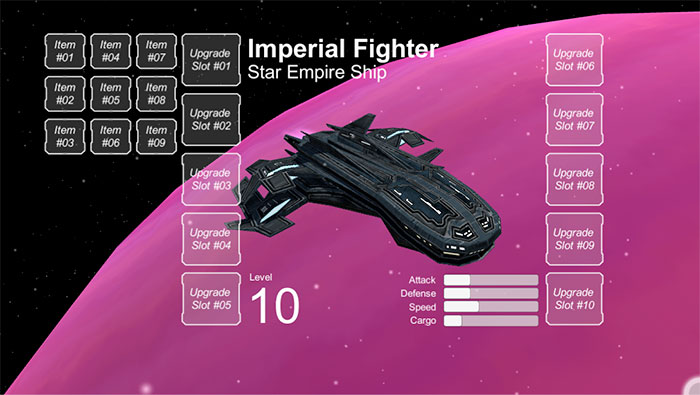
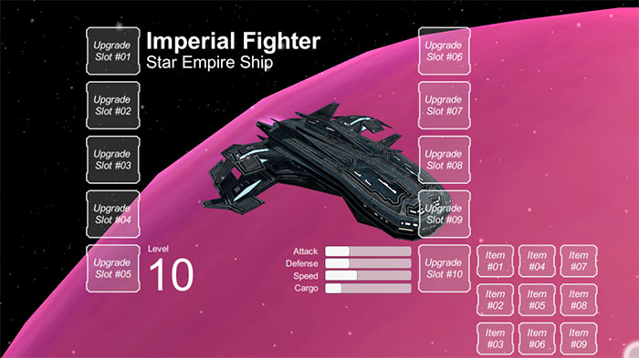

No post anterior demonstrei como iniciei o desenvolvimento da interface do inventário da nave, baseado na interface do jogo Destiny. O inventário ainda não, e desta vez comecei a adicionar mais funções na interface.
Melhorias no inventário
Até o último post alguns itens na interface eram apenas uma imagem estática, porém estes precisavam ser elementos de interface dinâmicos para serem modificados pelos itens colocados em cada slot. Por ser apenas um protótipo utilizei o slider da Unity para criar as barras de cada status, e no script que controla estes valores é possível modificá-los através do editor. Para exibir os controles abaixo basta adicionar [Range(x, y)] acima da declaração da variável, onde x é o valor mínimo e y o valor máximo, de acordo com o tipo da variável (int, float, etc).

Modifiquei também o movimento da interface e da nave de acordo com o movimento do cursor. No post anterior coloquei um GIF mostrado como estava funcionando, e um durante a última semana achei que estava estranho. Modifiquei o movimento para ficar limitado a área do jogo (antes estava considerando mesmo o cursor fora do jogo), adicionei limites para a movimentação e deixei o movimento no geral mais suave. Este tipo de melhoria não faz sentido em um protótipo, porém estava atrapalhando o desenvolvimento do próximo item, que era expandir cada slot para mostrar as opções dele. Ah, também mudei o nome da nave para uma do jogo Star Realms.

Expandindo cada slot
Uma das features mais legais da interface do jogo Destiny é a expansão de cada slot revelando opções de armas ou armaduras para serem equipadas quando o cursor está em cima do item ativo. No caso do Destiny a solução é bem sofisticada, e inclusive possui um atrito que reduz o movimento do cursor quando ele passa por cima de um slot. No meu caso, quero algo simples e que funcione para alterar upgrades da nave no meu protótipo.

Utilizei os mesmos botões das colunas de slots, porém tive que reduzir seu tamanho para caber na tela. Criei um Panel como Horizontal Layout Group e adicionei três outros panels como Vertical Layout Group, contendo três botões em cada. O resultado é um conjunto com nove items em cada slot.

Esconder e exibir este panel no momento correto foi um pouco demorado, tive problemas utilizando OnPointerExit para esconder o panel, pois ele deveria ficar visível quando o cursor sair do panel mas está em cima do slot. A solução final ficou no script TestItem, onde na hora de esconder o panel eu verifico a direção do movimento e se ele está em cima do slot antes de esconder. Por ser um protótipo não tem problema, mas na versão final do jogo eu imagino que esta interface vai dar um bom trabalho para ficar do jeito que eu imagino.
Algumas tools para o editor
Esta semana no Live Training da Unity (que acontece a cada duas semanas) o tema foi como criar ferramentas básicas para o editor da Unity. O video abaixo mostra como fazer algumas coisas básicas como converter Texture2D para Sprite dependendo do diretório que o arquivo for importado, selecionar objetos por Tag e criar objetos de maneira mais fácil e customizável. Recomendo assistir, adicionei as tools do vídeo no projeto para ajudar no desenvolvimento.
Próximos passos
Ainda existem muitas coisas para fazer na interface antes de voltar ao gameplay como: adicionar alguns upgrades nos slots, mudar o upgrade ativo e fazer os upgrades afetarem os status da nave (ataque, defesa, velocidade e carga). Depois disso volto a programar o gameplay e fazer estes status serem modificadores da nave durante o jogo. Também pretendo adicionar suporte ao controle do Xbox e Steam para mover o cursor, por enquanto apenas o mouse está funcionando. Além disso, preciso dar uma geral em alguns scripts que estão com código antigo comentado e alguns que nem estão sendo usados.
O andamento do projeto pode ser conferido no GitHub, e neste link você pode ver as alterações no projeto até este post. Todos os posts desta série sobre meu projeto podem ser vistos na tag Final Frontier, e como sempre qualquer sugestão ou opinião é bem vinda!